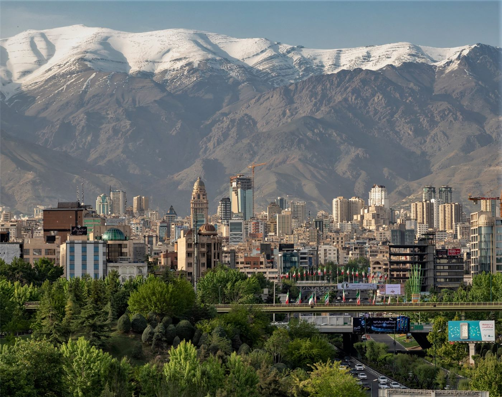

橋국제·중동
국제·중동美·이란 협상 테이블 다시 열리나… 트럼프 특사 스위스行, '60일 시한' 압박
미·이란이 종전 양해각서 이후 본협상 재개를 모색한다. 트럼프 대통령의 특사 2명이 스위스로 향했고, 이란은 협상 개시의 전제로 한 가지 조건을 내걸었다. 트럼프는 '60일 안에 합의하지 않으면 마음에 들지 않는 일을 하겠다'고 압박했다.
미·이란이 종전 양해각서 이후 본협상 재개를 모색한다. 트럼프 대통령의 특사 2명이 스위스로 향했고, 이란은 협상 개시의 전제로 한 가지 조건을 내걸었다. 트럼프는 '60일 안에 합의하지 않으면 마음에 들지 않는 일을 하겠다'고 압박했다.

이란과의 전쟁이 군비와 유가 급등으로 미국 가계에 막대한 비용을 남겼다는 분석이 나왔다. 추산 부담은 약 203조 원에 이른다.

미·이란 종전 합의로 유가 급등세는 꺾였지만, 국내 주유소 휘발유 값은 여전히 리터당 2009원 선이다. 하락이 소비자 가격에 반영되기까지는 시차가 있다.

일본 정부가 2040년까지 약 3500조 원 규모의 투자를 끌어내는 장기 성장전략을 내놓았다. 반도체·인공지능·청정에너지가 핵심 축이다.

젤렌스키 우크라이나 대통령이 러시아와의 협상이 재개될 수 있다고 밝혔다. 러시아 측은 유럽과의 대화에도 응할 수 있다면서 '상대의 태도 전환'을 조건으로 달았다.

이란 외무장관이 미·이란 양해각서의 이행을 두고 미국 측에 경고성 메시지를 보냈다. 합의 문구의 일방적 해석을 경계한 것으로 풀이된다.

예멘 후티 측 고위 인사가 미국을 향해 중동에서의 '침략적 전략'을 근본적으로 바꿔야 한다고 주장했다. 종전 국면에서도 역내 갈등의 불씨가 남아 있음을 보여준다.

미국 대통령 전용기의 새 기체 내부가 처음으로 언론에 공개됐다. 화려한 금빛 인테리어가 눈길을 끌었다.
브라질에서 도로가 갑자기 꺼지며 출근길 여성이 빨려 들어가는 사고가 발생했다. 폐쇄회로 영상에 그 순간이 담겼다.
일본 각지에서 곰 출몰이 이어지며 주민 안전이 위협받고 있다. 당국은 실전형 방어 훈련과 긴급 포획 제도로 대응에 나섰다.

미국 뉴욕에서 시민들이 노예해방을 기리는 '준틴스(Juneteenth)' 기념 행사를 열었다. 역사적 상처와 화합의 메시지가 함께 울렸다.

포르투갈의 호날두를 둘러싼 '이기적' 논란이 월드컵 무대에서 불거졌다. 동료 디아스는 '미미한 잡음'이라며 일축했다.
한때 그래미상 후보에 올랐던 밴드의 베이시스트가 세상을 떠났다. 보컬은 오랜 동료를 추모했다.
일본 가나가와에서 등하굣길 아동을 반복적으로 들이받은 남성이 체포됐다. 분노한 교사의 신고가 검거로 이어졌다.
감자가 당뇨 위험을 높인다는 통념에 대해, 20만 명을 추적한 연구가 '조리법이 관건'이라는 결론을 내놨다.